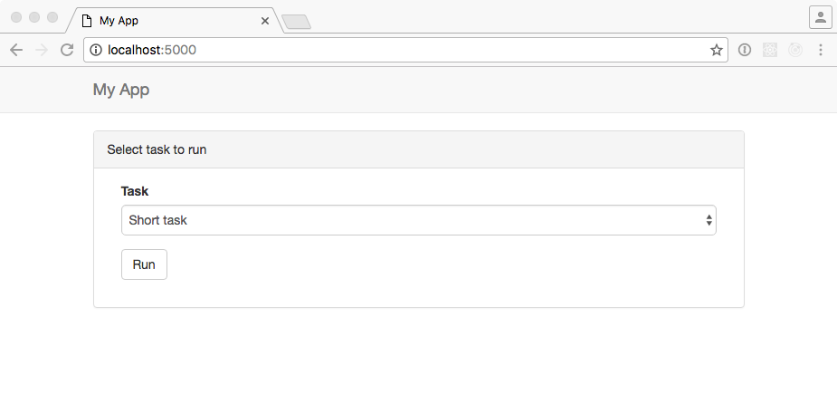

I wrote several webapps but it took me a while to understand how to run a
long task and get the result back (without blocking the server).
Of course, you should use a task queue like Celery or RQ.
It's easy to find examples how to send a task to a queue and... forget
about it. But how do you get the result?
I found a great blog post from Miguel Grinberg:
Using Celery With Flask.
It explains how to use ajax to poll the server for status updates.
And I finally got it!
As Miguel's post already detailed Celery, I wanted to investigate
RQ (Redis Queue), a simple library to queue job.
As a side note, Miguel's blog is really great. I learned Flask following the The Flask Mega-Tutorial.
If you are starting with Flask, I highly recommend it, as well as the
Flask book.
We'll make a simple app with a form to run some actions.
First version: send a post to the server and wait for the response
Let's start with some boilerplate code. This is gonna be a very
simple example, but I'll organize it like I use to for a real application
using Blueprints, an
application factory
and some extensions (Flask-Bootstrap, Flask-Script and Flask-WTF):
├── Dockerfile
├── LICENSE
├── README.rst
├── app
│ ├── __init__.py
│ ├── extensions.py
│ ├── factory.py
│ ├── main
│ │ ├── __init__.py
│ │ ├── forms.py
│ │ └── views.py
│ ├── settings.py
│ ├── static
│ │ └── css
│ │ └── main.css
│ ├── tasks.py
│ └── templates
│ ├── base.html
│ └── index.html
├── docker-compose.yml
├── environment.yml
├── manage.py
└── uwsgi.py
I define all the used extensions in app/extensions.py, my application factory in app/factory.py and
my default settings in app/settings.py. Nothing strange in there. You can refer to the
GitHub repository.
Here is our main app/main/views.py:
from flask import Blueprint, render_template, url_for, flash, redirect
from .. import tasks
from .forms import TaskForm
bp = Blueprint('main', __name__)
@bp.route('/', methods=['GET', 'POST'])
def index():
form = TaskForm()
if form.validate_on_submit():
task = form.task.data
try:
result = tasks.run(task)
except Exception as e:
flash('Task failed: {}'.format(e), 'danger')
else:
flash(result, 'success')
return redirect(url_for('main.index'))
return render_template('index.html', form=form)
As said previously, we create a form. On submit, we run the task and send the response back.
The form is defined in app/main/forms.py:
from flask import current_app
from flask_wtf import Form
from wtforms import SelectField
class TaskForm(Form):
task = SelectField('Task')
def __init__(self, *args, **kwargs):
super().__init__(*args, **kwargs)
self.task.choices = [(task, task) for task in current_app.config['TASKS']]
In app/tasks.py, we have our run function to start a dummy task:
import random
import time
from flask import current_app
def run(task):
if 'error' in task:
time.sleep(0.5)
1 / 0
if task.startswith('Short'):
seconds = 1
else:
seconds = random.randint(1, current_app.config['MAX_TIME_TO_WAIT'])
time.sleep(seconds)
return '{} performed in {} second(s)'.format(task, seconds)
In app/templates/base.html, we define a fixed to top navbar and
a container to show flash messages and our main code. Note that we take advantage of
Flask-Bootstrap.
{%- extends "bootstrap/base.html" %}
{% import "bootstrap/utils.html" as utils %}
{% block head %}
<meta charset="utf-8">
<meta http-equiv="X-UA-Compatible" content="IE=edge">
{{super()}}
{% endblock %}
{% block styles %}
{{super()}}
<link href="{{ url_for('static', filename='css/main.css') }}" rel="stylesheet">
{% endblock %}
{% block title %}My App{% endblock %}
{% block navbar %}
<!-- Fixed navbar -->
<div class="navbar navbar-default navbar-fixed-top" role="navigation">
<div class="container">
<div class="navbar-header">
<button type="button" class="navbar-toggle" data-toggle="collapse" data-target=".navbar-collapse">
<span class="sr-only">Toggle navigation</span>
<span class="icon-bar"></span>
<span class="icon-bar"></span>
<span class="icon-bar"></span>
</button>
<!--img class="navbar-brand" src="../../static/logo.png"-->
<a class="navbar-brand" href="{{ url_for('main.index') }}">My App</a>
</div>
</div>
</div>
{% endblock %}
{% block content %}
<div class="container" id="mainContent">
{{utils.flashed_messages(container=False, dismissible=True)}}
{% block main %}{% endblock %}
</div>
{% endblock %}
The html code for our view is in app/templates/index.html:
{%- extends "base.html" %}
{% import "bootstrap/wtf.html" as wtf %}
{% block main %}
<div class="panel panel-default">
<!-- Default panel contents -->
<div class="panel-heading">Select task to run</div>
<div class="panel-body">
<div class="col-md-3">
<form class="form" id="taskForm" method="POST">
{{ form.hidden_tag() }}
{{ wtf.form_field(form.task) }}
<div class="form-group">
<button type="submit" class="btn btn-default" id="submit">Run</button>
</div>
</form>
</div>
</div>
</div>
{% endblock %}
Let's run this first example. We could just create a virtual environment using virtualenv
or conda. As we'll soon need Redis, let's directly go for Docker:
$ git clone https://github.com/beenje/flask-rq-example.git
$ cd flask-rq-example
$ git checkout faa61009dbe3bafe49aae473f0fa19ab05a3ab90
$ docker-compose build
$ docker-compose up
Go to http://localhost:5000. You should see the following window:

Choose a task and press run. See how The UI is stuck while waiting for the server?
Not very nice...
Let' improve that a little by using some JavaScript.
Second version: use Ajax to submit the form
Let's write some javascript. Here is the app/static/js/main.js:
$(document).ready(function() {
// flash an alert
// remove previous alerts by default
// set clean to false to keep old alerts
function flash_alert(message, category, clean) {
if (typeof(clean) === "undefined") clean = true;
if(clean) {
remove_alerts();
}
var htmlString = '<div class="alert alert-' + category + ' alert-dismissible" role="alert">'
htmlString += '<button type="button" class="close" data-dismiss="alert" aria-label="Close">'
htmlString += '<span aria-hidden="true">×</span></button>' + message + '</div>'
$(htmlString).prependTo("#mainContent").hide().slideDown();
}
function remove_alerts() {
$(".alert").slideUp("normal", function() {
$(this).remove();
});
}
// submit form
$("#submit").on('click', function() {
flash_alert("Running " + $("#task").val() + "...", "info");
$.ajax({
url: $SCRIPT_ROOT + "/_run_task",
data: $("#taskForm").serialize(),
method: "POST",
dataType: "json",
success: function(data) {
flash_alert(data.result, "success");
},
error: function(jqXHR, textStatus, errorThrown) {
flash_alert(JSON.parse(jqXHR.responseText).message, "danger");
}
});
});
});
To include this file in our html, we add the following block to app/templates/base.html:
{% block scripts %}
{{super()}}
<script type=text/javascript>
$SCRIPT_ROOT = {{ request.script_root|tojson|safe }};
</script>
{% block app_scripts %}{% endblock %}
{% endblock %}
And here is a diff for our app/templates/index.html:
{{ form.hidden_tag() }}
{{ wtf.form_field(form.task) }}
<div class="form-group">
- <button type="submit" class="btn btn-default" id="submit">Run</button>
+ <button type="button" class="btn btn-default" id="submit">Run</button>
</div>
</form>
</div>
</div>
</div>
{% endblock %}
+
+{% block app_scripts %}
+ <script src="{{ url_for('static', filename='js/main.js') }}"></script>
+{% endblock %}
We change the button type from submit to button so that it doesn't send a POST when clicked.
We send an Ajax query to $SCRIPT_ROOT/_run_task instead.
This is our new app/main/views.py:
from flask import Blueprint, render_template, request, jsonify
from .. import tasks
from .forms import TaskForm
bp = Blueprint('main', __name__)
@bp.route('/_run_task', methods=['POST'])
def run_task():
task = request.form.get('task')
try:
result = tasks.run(task)
except Exception as e:
return jsonify({'message': 'Task failed: {}'.format(e)}), 500
return jsonify({'result': result})
@bp.route('/')
def index():
form = TaskForm()
return render_template('index.html', form=form)
Let's run this new example:
$ git checkout c1ccfe8b3a39079ab80f813b5733b324c8b65c6f
$ docker rm flaskrqexample_web
$ docker-compose up
This time we immediately get some feedback when clicking on Run. There is no reload.
That's better, but the server is still busy during the processing. If you try to open a new page, you won't get any answer until the task is done...
To avoid blocking the server, we'll use a task queue.
Third version: setup RQ
As its name indicates, RQ (Redis Queue) is backed by Redis.
It is designed to have a low barrier entry.
What do we need to integrate RQ in our Flask web app?
Let's first add some variables in app/settings.py:
# The Redis database to use
REDIS_URL = 'redis://redis:6379/0'
# The queues to listen on
QUEUES = ['default']
To execute a background job, we need a worker.
RQ comes with the rq worker command to start a worker. To integrate it
better with our Flask app, we are going to write a simple Flask-Script
command. We add the following to our manage.py:
from rq import Connection, Worker
@manager.command
def runworker():
redis_url = app.config['REDIS_URL']
redis_connection = redis.from_url(redis_url)
with Connection(redis_connection):
worker = Worker(app.config['QUEUES'])
worker.work()
The Manager runs the command inside a Flask test context, meaning we can
access the app config from within the worker.
This is nice because both our web application and
workers (and thus the jobs run on the worker) have access to the same
configuration variables. No separate config file. No discrepancy.
Everything is in app/settings.py and can be overwritten by LOCAL_SETTINGS.
To put a job in a Queue, you just create a RQ Queue and enqueue it.
One way to do that is to pass the connection when creating the Queue. This is a bit tedious.
RQ has the notion of connection context. We take advantage of that
and register a function to push the connection and pop it before and after a request (app/main/views.py):
import redis
from flask import Blueprint, render_template, request, jsonify, current_app, g
from rq import push_connection, pop_connection, Queue
def get_redis_connection():
redis_connection = getattr(g, '_redis_connection', None)
if redis_connection is None:
redis_url = current_app.config['REDIS_URL']
redis_connection = g._redis_connection = redis.from_url(redis_url)
return redis_connection
@bp.before_request
def push_rq_connection():
push_connection(get_redis_connection())
@bp.teardown_request
def pop_rq_connection(exception=None):
pop_connection()
This makes it easy to create a Queue in a request or application context.
The get_redis_connection function gets the Redis connection and stores it in the flask.g object.
This is the same as what is explained for SQLite here.
With that in place, it's easy to enqueue a job. Here are the changes to the run_task function:
@bp.route('/_run_task', methods=['POST'])
def run_task():
task = request.form.get('task')
- try:
- result = tasks.run(task)
- except Exception as e:
- return jsonify({'message': 'Task failed: {}'.format(e)}), 500
- return jsonify({'result': result})
+ q = Queue()
+ job = q.enqueue(tasks.run, task)
+ return jsonify({'job_id': job.get_id()})
We enqeue our task and just return the job id for now.
Docker and docker-compose are now gonna come in handy to start eveything
(Redis, our web app and a worker). We just have to add the following to our
docker-compose.yml file:
- "5000:5000"
volumes:
- .:/app
+ depends_on:
+ - redis
+ worker:
+ image: flaskrqexample
+ container_name: flaskrqexample_worker
+ environment:
+ LOCAL_SETTINGS: /app/settings.cfg
+ command: python manage.py runworker
+ volumes:
+ - .:/app
+ depends_on:
+ - redis
+ redis:
+ image: redis:3.2
Don't forget to add redis and rq to your environment.yml file!
- dominate==2.2.1
- flask-bootstrap==3.3.6.0
- flask-script==2.0.5
+ - redis==2.10.5
+ - rq==0.6.0
- visitor==0.1.3
Rebuild the docker image and start the app:
$ git checkout 437e710df3df0dd4b153f20027f5f00270b2e1a3
$ docker rm flaskrqexample_web
$ docker-compose build
$ docker-compose up
OK, nice, we started a job in the background! This is fine to run a task
and forget about it (like sending an e-mail). But how do we get the result back?
Fourth version: poll job status and get the result
This is the part I have been missing for some time. But, as often, it's not difficult when you have seen it.
When launching the job, we return an url to check the status of the job.
The trick is to periodically call back the same function until the job is finished or failed.
On the server side, the job_status endpoint uses the job_id to retrieve
the job and to get its status and result.
@bp.route('/status/<job_id>')
def job_status(job_id):
q = Queue()
job = q.fetch_job(job_id)
if job is None:
response = {'status': 'unknown'}
else:
response = {
'status': job.get_status(),
'result': job.result,
}
if job.is_failed:
response['message'] = job.exc_info.strip().split('\n')[-1]
return jsonify(response)
@bp.route('/_run_task', methods=['POST'])
def run_task():
task = request.form.get('task')
q = Queue()
job = q.enqueue(tasks.run, task)
return jsonify({}), 202, {'Location': url_for('main.job_status', job_id=job.get_id())}
The run_task function returns an empty response with the 202 status
code. We use the Location response-header field to pass the job_status URL to the
client.
On the client side, we retrieve the URL from the header and call the new
check_job_status function.
@@ -28,8 +53,11 @@ $(document).ready(function() {
data: $("#taskForm").serialize(),
method: "POST",
dataType: "json",
- success: function(data) {
- flash_alert("Job " + data.job_id + " started...", "info", false);
+ success: function(data, status, request) {
+ $("#submit").attr("disabled", "disabled");
+ flash_alert("Running " + task + "...", "info");
+ var status_url = request.getResponseHeader('Location');
+ check_job_status(status_url);
},
error: function(jqXHR, textStatus, errorThrown) {
flash_alert("Failed to start " + task, "danger");
We use setTimeout to call back the same function until the job is done (finished
or failed).
function check_job_status(status_url) {
$.getJSON(status_url, function(data) {
console.log(data);
switch (data.status) {
case "unknown":
flash_alert("Unknown job id", "danger");
$("#submit").removeAttr("disabled");
break;
case "finished":
flash_alert(data.result, "success");
$("#submit").removeAttr("disabled");
break;
case "failed":
flash_alert("Job failed: " + data.message, "danger");
$("#submit").removeAttr("disabled");
break;
default:
// queued/started/deferred
setTimeout(function() {
check_job_status(status_url);
}, 500);
}
});
}
Let's checkout this commit and run our app again:
$ git checkout da8360aefb222afc17417a518ac25029566071d6
$ docker rm flaskrqexample_web
$ docker rm flaskrqexample_worker
$ docker-compose up
Try submitting some tasks. This time you can open another window and the
server will answer even when a task is running :-)
You can open a console in your browser to see the polling and the response
from the job_status function.
Note that we only have one worker, so if you start a second task, it will be enqueued
and run only when the first one is done.
Conclusion
Using RQ with Flask isn't that difficult. So no need to block the server to
get the result of a long task.
There are a few more things to say, but this post starts to be a bit long,
so I'll keep that for another time.
Thanks again to Miguel Grinberg
and all his posts about Flask!